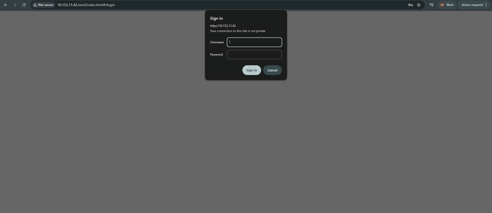
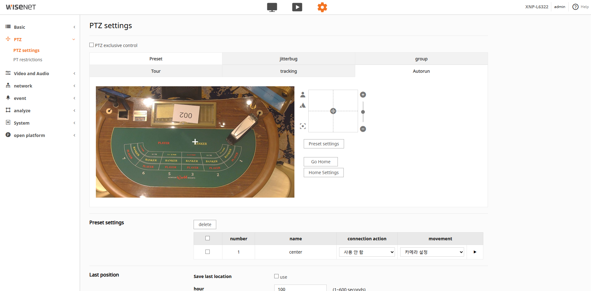
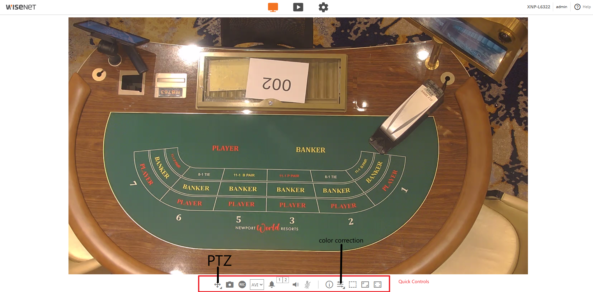
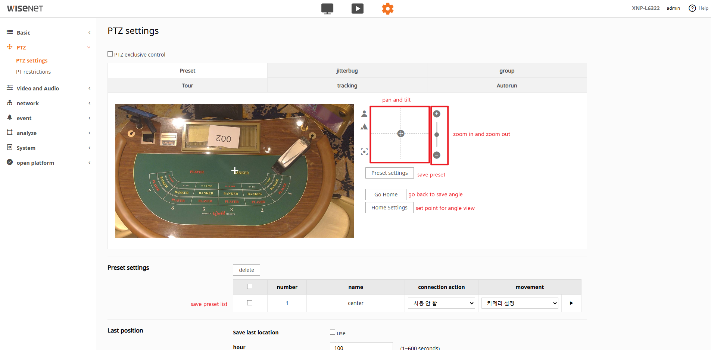

Camera Angle Adjustment
Hanwha XNP-6320 PTZ Camera
Introduction
This document provides a step-by-step guide for adjusting the camera angle of the Hanwha XNP-6320 PTZ (Pan-Tilt-Zoom) camera. This procedure is intended for authorized personnel responsible for camera operation and surveillance system management.
Accessing the Camera's Web Interface
To begin, you need to access the camera's web interface.
- Open your web browser and enter the IP address of the Hanwha XNP-6320 PTZ camera. (Refer to the 9U Newport Okura spreadsheet for the camera's IP address).
- On the login page, enter your Username and Password in the designated fields.
- Click the Login button.
- Upon successful login, you will be directed to the camera's live view or dashboard.


Adjusting PTZ Settings
After logging in, navigate to the PTZ settings to adjust the camera angle.
- From the camera's dashboard, locate the Settings option, typically found in the top right corner or a navigation menu.
- Click on Settings to open the menu.
- In the settings menu, find and select the PTZ section. This section allows control and configuration of the camera's movement and zoom functions.

PTZ Controls and Configuration
The PTZ section is divided into two main areas:

PTZ Settings
In this area, you can adjust the camera's movement and preset positions.
- Pan, Tilt, and Zoom Speeds: Adjust the speed at which the camera pans horizontally, tilts vertically, and zooms in or out.
- Set and Recall Preset Positions:
- Manually move the camera to the desired angle using the pan, tilt, and zoom controls.
- Once the desired view is achieved, save it as a preset position and name it.
- To recall a saved position, select the corresponding preset number.
- Define Patrol Routes: Create automated patrol sequences where the camera moves through a series of preset positions.
- Enable Auto-Tracking: If available, enable the auto-tracking feature to allow the camera to automatically follow moving objects.
- Configure Home Position: Set a default home position that the camera returns to after a period of inactivity or after completing a patrol.

PTZ Restrictions
This area allows you to set limitations on the camera's movement for privacy or operational reasons.
- Limit Camera Movement, Zoom, and Speed: Define the maximum range for pan, tilt, and zoom, and set speed limits.
- Define Restricted or Masked Areas: Create privacy zones that the camera will not record or where a digital mask will be applied to protect sensitive areas.
Saving Changes
After making any adjustments to the PTZ settings, ensure you save your changes. There will typically be a "Save" or "Apply" button within the PTZ or general settings section.
Verification
After adjusting the camera angle and saving the settings, observe the live view to ensure the camera is positioned as desired and functioning correctly.
⚠️ Important Safety Notes
- Only authorized personnel should access camera settings
- Test all movements before saving preset positions
- Document all configuration changes for future reference
- Ensure privacy zones are properly configured before deployment